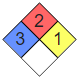

表格概述
表格就是由若干的行與列所構成的一種有序的組織形式。實際上，這是對最基本的表格類型的簡化描述，而這種簡化描述則引出了下列事項：
- 術語行存在幾個常見的同義詞，如記錄、k-元組、n-元組、矢量。
- 術語列也有幾個常見的同義詞，如欄位、參數、特性、屬性。
- 通常採用名稱（即列標題或者說列名）來標識相應的列。
- 列標題可由某個單詞、短語或數字型索引構成。
- 每一行與每一列的交匯區域就是一個單元格。
|
姓名
|
性別
|
年齡
|
| 張三 |
男 |
33 |
| 李四 |
女 |
23 |
| 王五 |
男 |
43 |
| 馬六 |
女 |
20 |
| 標準表示法 |
表格表示法 |
|

|
|
該設施之中危險品的危險等級
|
| 健康危害 |
可燃性 |
反應性 |
特殊危害 |
| 3級 |
2級 |
1級 |
|
|
回首頁